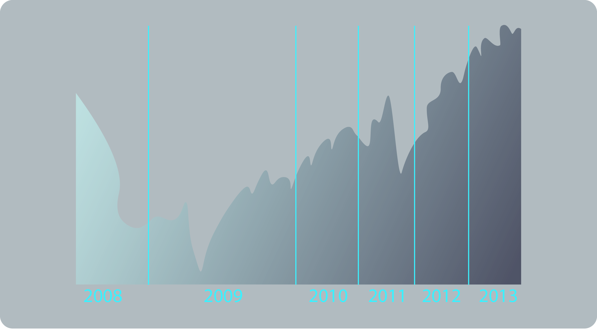

A stock index itself is just a mathematical construction to measure the performance of the stock markets. It cannot be invested in directly meaning investors cannot own a stock index directly like they can shares.
Instead, investing in stock indices is made accessible through exchange-traded funds (ETFs) which track the performance of the index or through derivatives such as option and futures contracts.
Futures contracts of stock indices are the instruments we trade with our broker. These instruments are based on the underlying price of the index and will move in line with them.
The first ever ETF to track an index was the S&P500 (SPDR). This was developed to track the performance of the 500 largest companies in the US. Now, there are literally hundreds of ETFs and futures contracts which track different groups of stock.
Stock market indices may be categorized in many ways. A ‘world’ or ‘global’ stock index is made up of companies irrespective of where they are based or traded.
A ‘national’ index’ represents the performance of the stock market in a given nation and therefore reflects investor sentiment on the state of its economy. The most regularly traded national indices are made up of the stocks of the largest companies listed on the nations stock exchanges. Examples include the US S&P 500, the Japanese Nikkei 225, and the UK’s FTSE 100.
Stock indices can also represent the performance of companies of more extensive geographical regions.
The DJ Euro Stoxx 50 consists of the stock of 50 blue-chip companies based in the Euro Zone only. The MSCI Emerging Markets Index is made up of stock from emerging economies only such as Brazil, Mexico and South Africa.
Finally there are unique indices that relate to certain industry sectors. The NASDAQ 100 for example primarily consists of companies in the technology industry and totally omits financial companies. The point is that there are hundreds of different types of indices which measure the performance of stock in different sectors and areas.
However, most traders focus on the main national indices we mentioned above.
Each stock in an index is usually given a level of weight, or importance. When there is no weighting method used it is called an ‘Equal-Weighted Index’ as all companies carry the same level of importance whether they are a large company or small.
This type of method is unusual however and the most popular indices have some form of weighting applied. Below we will briefly discuss the two most common types of weighting methods used.
A price weighted index is where each stock is weighted according to its price only i.e. the price of the stock is all that is considered when weighting that company in the index.
Therefore a stock trading at $100 per share (company A) is 5 times more of the total index than a stock trading at $20 per share (company B). This means that a price move in company A’s shares is likely to have a much bigger impact on the index than a price move in company B’s shares. Examples of price-weighted indices include the Dow Jones 30 and the Nikkei 225.
One of the shortfalls of the price-weighted method is that it doesn’t consider the overall size and market value of the company. The capitalization-weighted method will weigh companies based upon the total market value of all their shares i.e. share price times the amount of outstanding shares.
In our example above we said that company A will have a greater weight on the index because its share price is 5 times greater than company B’s under the price-weighted model. However, a company’s true value is not reflected solely in its share price, and company A might be a smaller company than company B.
For example, if company A has only 100,000 outstanding shares then its market capitalization (market cap) is $10m. But if company B has 1m outstanding shares then it has a market cap of $20m.
So under a capitalization-weighted index, company B is given twice the weight of company A.
A capitalization-weighted index can also be called a market-value weighted index. Capitalization-weighted indices are the most popular type of index and examples include the S&P 500, FTSE 100, CAC 40 and DAX 30.
As stock indices can be a group of any type of stock the factors that move the price will vary. Large national stock indices such as the S&P500 in the US will be heavily influenced by macroeconomic factors in the US economy as well as the microeconomic factors of the companies which make it up.
Therefore, as a trader, we need to keep an eye on the performance and profitability of the main companies in the index but also the economic climate of the index’s base nation. Some key economic indicators that shape the price of a stock index include but are certainly not limited to:
Inflation
Interest rates
Employment levels
Price of energy and precious metals
Exchange rates
Political policies & decisions
Monetary and Fiscal policy
Some stock indices and ETFs track the performance of stock in a specific sector of the economy such as technology, financial services, real estate or healthcare. If we are trading this type of instrument we need to be aware of the current economic state and profitability of that sector.
In our next six articles we will take a closer look at some of the most popularly traded stock indices; what they consist of and how they are calculated including the Dow Jones Industrial Average 30 (US), Standard & Poor’s 500 (US), FTSE 100 (UK), DAX 30 (Germany), CAC 40 (France) and Nikkei 225 (Japan).
In this article we will explain how to calculate price moves when trading stock market indices. Similar to commodities, stock market indices move in ticks.
A tick is defined as the smallest price movement of an instrument, in other words the minimum increment in which the price can change.
Each index will have its own way of moving. Below is a list of the major stock indices and the increments (i.e. tick moves) of each.
Instrument
Country
Currency
Increment
S&P500
US
USD
0.25
NASDAQ 100
US
USD
0.25
DJ 30
US
USD
1.00
CAC 40
France
EUR
0.50
DAX 30
Germany
EUR
0.50
FTSE 100
UK
GBP
0.50
NIKKEI 225
Japan
JPY
5.00
So in our above table we can see the S&P and NASDAQ have tick moves of 0.25, the three European indices have tick moves of 0.50 and the Dow Jones moves in increments of 1.00.
So taking the S&P500, if it moves from 1,650.00 to 1,650.25, we say that is a move of one tick. However in the case of the Dow Jones if it moves from 14,700.00 to 14,701.00 that is considered a movement of one tick too.
Stock indices’ movements are also often measured in points as well as ticks. Points are mentioned more often on news bulletins and reports when referring to stock indices like the Dow Jones or S&P.
A point is a price movement that occurs when we see the number BEFORE the decimal point change up or down by one.
So if the S&P500 increases from 1650.00 to 1651.00 this is an upward move of one point. This one point was made up of four ticks as the S&P moves in 0.25 tick moves.
In our Dow Jones example above we said it moved from 14,700.00 to 14,701.00. We called this movement a tick but it can also be called a point. They are the same thing in this case.
The Dow Jones futures only move in points as the figure is so large.
In our table from earlier we can see that each index has its own currency. Obviously the American indices use the US Dollar, the FTSE uses the British Pound, the European indices use the Euro and the Nikkei uses the Yen.
So to calculate the value of a tick move we simply multiply our position size by one tick:
So let’s take the Dow Jones as our first example. The minimum trade size for each stock index is 1 index. So if we believe the Dow is going to increase in value and we want to open the minimum size then:
1 index * 1.00 (tick) = $1.00
So every time the Dow moves one tick (or one point) we will gain or lose a US dollar. If we have a Euro trading account our profit or loss will automatically be calculated at the current EUR/USD exchange rate
Let’s take another example using the FTSE 100 this time. Say this time we wanted to short sell 5 FTSE indexes. Our calculation will be as follows:
5 indexes * 0.50 (tick) = £2.50
So every time the FTSE moves 0.50 we will gain or lose £2.50 as we bought 5 indexes. So say the FTSE moved from 6,300.00 to 6,400.00 we would make £500.
Of course if we have a Euro or US Dollar platform our profit is converted at the current exchange rates and that is what we would see in our account.
Let’s look at a final example using the NIKKEI 225. So let’s say we want to buy 200 indexes of the Nikkei then our calculation would be as follows:
200 indexes * 5.00 (tick) = ¥ 1,000
So in this case every time the Nikkei moves a tick (5.00) we will gain or lose ¥ 1,000. Of course this ¥ 1,000 will be automatically converted to the Euro, US Dollar or British Pound exchange rates.
Some indices will have a minimum trade size based on their value. For example the Nikkei has a minimum trade size of 100 indexes as the value of the Nikkei is measured in Yen and if we were to buy just 1 index it would be too small a trade. For the other indices we mentioned the minimum trade size is just 1 index.
The unit for trading stock indices is an index. Each stock index will also have its own currency depending on its country. Below we see the currency associated with each of the major indices.
Instrument
Country
Currency
S&P50
US
USD
NASDAQ 100
US
USD
DJ 30
US
USD
CAC 40
France
EUR
DAX 30
Germany
EUR
FTSE 100
UK
GBP
NIKKEI 225
Japan
JPY
So if we are buying or selling a US index it will be priced in US Dollars. The FTSE will be priced in Pound Sterling. The CAC and DAX will be priced in Euro. And the NIKKEI will be priced in Japanese Yen.
So as we should know by now when we are buying and selling instruments using leverage we do not need the full amount of the position in our balance. Instead we only require a portion of the total value known as the margin requirement i.e. the amount we put down so we can open the full position size.
Let’s take an example using the S&P 500.
So say we want to buy just 1 index of the S&P. The current price is 1645.75. So without leverage we would have to pay $1,645.75to open this position. However, say we have access to 200:1 leverage on the S&P that means we only need 0.5% of this. So in this case our margin requirement will be just $8.23.
Trade Type
Buy
Instrument
S&P 500
Trade Size
1 Index
Current Market Price
$1,645.75
Cost of Trade without Leverage
$1,645.75
Margin Requirements (Leverage)
0.5% (200:1)
Used Margin for Trade
$8.23
If we had a trading account in a different currency denomination then this $8.23 would be converted to our currency at the current exchange rate.
Let’s look at another example taking the DAX 30.
Say we wanted to short sell 10 indexes of the DAX as we believe German equities will fall in value. The current price is €8,549.50.So without leverage the price of this position would be €85,495.00. But if our broker offers us leverage of 50:1 on the DAX we only need to put down 2% of that as a margin requirement to open the position.
Therefore, for a position of 10 indexes we only require a margin of €1,709.90.
Trade Type
Sell
Instrument
DAX 30
Trade Size
10 Indexes
Current Market Price
€8,549.50
Cost of Trade without Leverage
€85,495.00
Margin Requirements (Leverage)
2% (50:1)
Used Margin for Trade
€1,709.90
Again, if we had a trading account in a different currency denomination then this $51.91 would be converted to our currency at the current exchange rate.
The Standard and Poor’s 500 (or more commonly known as the S&P 500) is a stock market index made up of 500 leading companies publicly traded in the U.S. stock market.
The companies are selected by Standard and Poor’s Index Committee and the index is designed to be a leading indicator of the US equities market.
Many people agree that the S&P500 index is a better representation of the US market as it contains 500 large, blue-chip companies compared to the Dow Jones’ 30.
The S&P 500 contains all of the stocks in the Dow Jones with an additional 470. Some notable stocks in this additional 470 include:
Apple Inc.
Oracle Corp.
Bank of America Corp.
Google Inc.
QUALCOMM Inc.
Berkshire Hathaway Inc.
Wells Fargo and Co.
Citigroup In
Kraft Foods Inc
Microsoft Corp.
PepsiCo Inc.
Comcast Corp.
Google and Apple, who do not feature in the Dow Jones due to their large stock prices, are key components of the S&P500. They are heavily weighted but due to the size of the S&P they do not dominate it like they would the Dow. The S&P is made up of companies from a wide array of industry sectors. Below we see the weightings of each sector (accurate as of August 2013):
Sector
Weight (%)
Technology
17.73
Financial Services
16.71
Health Care
12.97
Customer Discretionary
12.18
Energy
10.51
Consumer Staples
10.41
Industrials
10.28
Materials
3.32
Utilities
3.30
Telecommunications
2.58
A company will be considered for admission to the S&P500 when its market capitalization is within the top 500 in the US. In addition to this the S&P admissions board will consider several other criteria:
Minimum market capitalization of $4 billion
Sufficient amount of shares in public hands
Liquidity – minimum trading volume of 250,000 shares each month before evaluation
Correct sector classification
Listed on NYSE or NASDAQ exchange
Sufficient length of time on this exchange
Financial viability of the firm When a company is added to the S&P we usually see the share price of that company rise as managers of index funds will normally purchase that company’s stock in order to continue tracking the S&P500.
The weighting-method used by the S&P500 differs from the Dow in that it weighs companies according to their overall market capitalization.
Market Capitalization=Price of Share*Amount of Outstanding Stock
Market capitalization therefore gives a better gauge of the overall size and value of a company rather than just taking the price of each share. The S&P500’s capitalization-weighted method is also float-weighted which means that it only takes into account the number of shares available for public trading between institutional and retail investors. It therefore excludes any shares that are tied up in the company itself or any government holdings.
Just like the Dow Jones the S&P500 is calculated using a divisor set by Standard and Poor’s. The calculation of the index adds all market capitalizations for each of the 500 companies and divides the sum by this divisor. So for example, if the market cap of the 500 stocks came to $13 trillion and the divisor is set at 8.9 billion we would have an S&P index value of 1,460.67.
S&P 500 Index=Sum of(Stock prices*Numbers of shares)/The S&P Divasor
This divisor is adjusted in the case of stock issuance, mergers, change of companies in the index amongst other corporate actions to ensure that such events do not significantly alter the value of the index. However, unlike the Dow Jones, it does not adjust its divisor on the back of a stock split because the market capitalization of the company will remain the same.
Just like the Dow Jones, the S&P hit an intra-day high of 1,552.87 in March 2000 at the height of the dot-com bubble. We then saw it decline drastically by over 50% to 768.63 during the stock market downturn of 2001/2002 due to the dot-com bubble bursting along with political and social adversities such as 9/11 and the Afghan and Iraq Wars.
During the boom of the mid 2000s we saw the S&P soar once more and it hit a new record high with a close of 1,565.15 on October 9th 2007. The market began to decline from this peak on the back of the financial crisis. It hit its lowest point in 13 years on 9th March 2009 closing at 676.53.
In 2013 we have seen the S&P500 rise by more than 25% on the back of QE3 – the Federal Reserve’s third round of quantitative easing which sees $85bn a month being printed to buy mortgage-backed securities and treasury bonds. This monetary policy has seen stock prices rise drastically in value.
On September 19th 2013 we saw the index hit its all-time record high closing the day at 1,725.52.
Below is a chart of the S&P 500 from mid-2008 to the start of October 2013.
In the above chart we have outlined the effect that monetary policy has had on the S&P 500.
QE1: November 2008 – March 2010 The first round of quantitative easing (QE1) to help stimulate the economy and promote lending was announced at the end of 2008. Ben Bernanke, the Chairman of the Federal Reserve announced that the Fed would purchase $600 billion in mortgage-backed securities and agency debt. This was then expanded on March 18th, 2009 and we saw an immediate impact on the markets. The S&P soared over 500 points from just under 700 to over 1200.
QE2: November 2010 – June 2011 On November 3rd 2010 Bernanke announced a second round of quantitative easing to further stimulate the economy. The Fed would purchase $600 billion of longer dated treasuries, at a rate of $75 billion per month. The market had already reacted to this news as Bernanke strongly hinted towards the policy a few months before the official announcement. Again we saw the S&P rise over 300 points from 1050 to over 1350.
Operation Twist: 2011 The Fed announced on 21st September the implementation of Operation Twist. This was a plan to purchase $400 billion of bonds with maturities of 6 to 30 years and to sell bonds with maturities less than 3 years. This was an attempt to do what quantitative easing tries to do, without printing more money and without expanding the Fed’s balance sheet. This led to a strengthening US dollar rather than a weakening one like QE does. The implementation also had a positive impact on the stock markets and we saw the S&P rise from 1100 to 1450 throughout 2012.
QE3: September 2012 – Present* On September 13th 2012, the Fed announced a third round of quantitative easing and is still in effect to present (*October 1 st 2013). The unemployment rate of the US is the key concern and the Fed have made an open-ended commitment to purchase $40bn worth of mortgage-backed securities and $45bn worth of long-term treasury bonds until the labor market improves ‘substantially’. As a result of QE3 we have seen the S&P rise substantially in 2013 hitting its all-time high on 19 th September 2013. It is likely we will see a tapering of QE3 before the end of 2013.
The S&P futures contract (called the E-Mini) is tradable from 22:01 – 20:14 (GMT), Monday to Friday.
The S&P moves in increments of 0.25.
The margin requirement for trading the S&P is usually about 0.5% (i.e. 200 to 1 leverage) with most brokers.
The minimum trade size is 1 index.
The currency of the S&P is the US Dollar.
So let’s say we want to BUY 1 index of the S&P500 and it is currently priced at 1,600 and we have a US Dollar denominated trading account:
The margin (or funds) we would need to put up to open this position would be just $8.00. ($1,600 (price of S&P) X 0.5% (margin requirement) = $8.00)
This amount can be seen in the ‘used margin’ section on our trading platform.
If we have an account in a different base currency such as Euro, our margin remains 0.5% but our trading platform will automatically convert the $8 to Euro.
So say the EUR/USD rate is 1.3500. We then see approximately €5.90 in the ‘used margin’ section of our Euro account.
Every move in the S&P500 is 0.25 cent (dollar), so in our example if we bought 1 index and the S&P rises from 1,600.00 to 1,625.25 we make a profit of $25.25 (or €18.70 at our exchange rate above).
The FTSE 100 Stock Market Index (referred to as the ‘footsie’), is an index made up of 100 companies listed on the London Stock Exchange with the highest market capitalization. Like the S&P 500 it is therefore a capitalization-weighted index.
The FTSE is one of the world’s most quoted indices as it measures the performance of the largest companies based in the UK – one of the world’s leading economies.
Below is a list of the largest companies on the FTSE 100 in descending weight*.
HSBC Holdings (8.00%)
AstraZeneca (2.45%)
SABMiller (1.88%)
Vodafone Group (5.76%)
BG Group (2.40%)
Standard Chartered (1.78%)
BP (5.46%)
Barclays (2.26%)
Prudential (1.73%)
Royal Dutch Shell A (5.02%)
BHP Billiton (2.24%)
National Grid (1.71%)
British American Tobacco (4.07%)
Rio Tinto (2.11%)
Tesco (1.68%)
Royal Dutch Shell B** (3.52%)
Unilever (2.02%)
Lloyds Banking Group (1.67%)
Diageo (2.98%)
Reckitt Benckiser (1.89%)
BT Group (1.53%)
*As at 23rd September 2013
Understanding the importance of the biggest names in the FTSE (and all stock indices for that matter) is essential when trading as price movements in these shares are likely to have the biggest impact.,/p>
The top ten companies account for more than 40% of its value. Four of the top ten stocks are oil and gas companies – Royal Dutch Shell A & B, BP and BG Group (as of September 2013). Therefore an informed FTSE trader will be up-to-date on any major events in the energies industry as well as oil prices and production news.
**Royal Dutch Shell has class A and B shares. They are very similar in terms of what they offer the shareholder. The difference is that Class A shares are subject to a 15% Dutch withholding tax on dividends as these shares were originally part of the Dutch entity of the company before the two merged. Both types of shares are quoted on the FTSE 100 – RDSA and RDSB.
There is a quarterly review of the companies in the FTSE 100 and membership of the index can change at this review. The FTSE 250 is the index of the next biggest 250 companies in terms of market cap after the FTSE 100.
If a member of the FTSE 250 increases its market cap sufficiently to surpass a current member of the FTSE 100 then it can knock out a current member.
However, to keep membership consistent the company coming from the FTSE 250 must break into the top 90 of the FTSE 100 to be added or a current member must fall to 111th to be replaced.
The index began in January 1984 at the base level of 1000 points. The highest value it has ever reached is 6950.6, which happened at the end of 1999. Like most indices the recent credit crunch hit the value of the FTSE as it fell below 3500 in March 2009, but since then we have seen it recover to over 6500 hitting a 12 year high of 6,840.27 on 22nd May 2013.
Does this mean that the value of the FTSE has increased almost seven fold since 1984? Yes it does, but that doesn’t necessarily mean that the value of companies has increased seven fold. Quite a bit of that increase is due to inflation over time. Also, like most national indices, the component companies have changed over the years so we are not looking at the same list of companies since 1984.
A one-day line chart graphing the performance of the FTSE from mid-2008 to September 2013.
